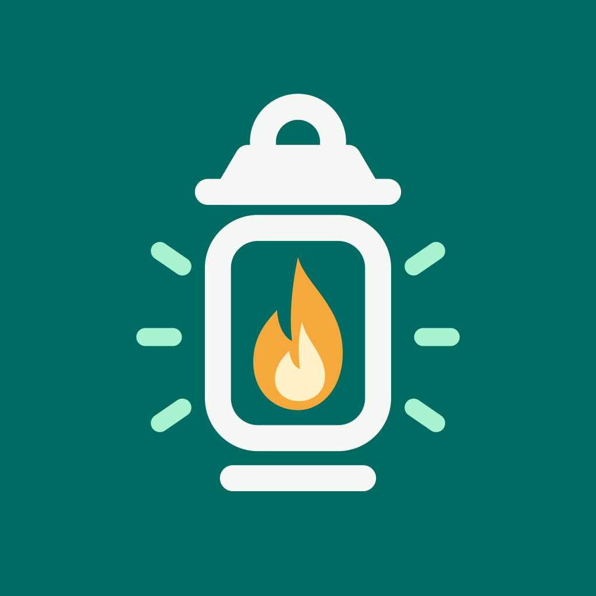

The LumaPath lantern
A clear, recognizable mark for the native app, Watch companion, and project materials.

App icon
Use the teal tile for app and profile imagery.



Lantern mark
Use the transparent mark on dark surfaces, preserving its proportions.

Core palette
Teal and mint lead the interface, with amber reserved for the lantern flame. Native text and controls use adaptive, contrast-tested semantic colors.
Teal#006B63
Mint#A7F3D0
Flame#F4A93A
Canvas#F5F7F4
Ink#14282B